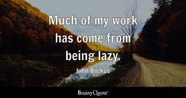
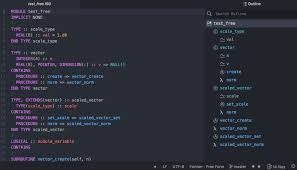
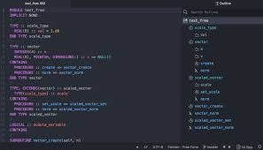
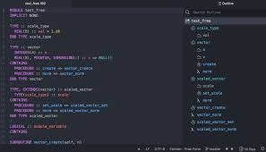
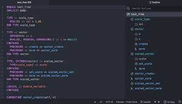

Media

 


Resources
John Backus BiographyIntroduction to Fortran
More on Fortran from the official IBM website
John Warner Backus was born on December 3, 1924 in the United States of America and died on March 17, 2007. John was an American computer scientist and mathematician who led the team that designed FORTRAN. John worked at the research facilities in Yorktown Heights as an IBM Fellow. John Backus was most known for his teams development of the Language FORTRAN in 1954.
Fortran changed computer programming by allowing scientists, mathematicians and engineers the ability to input their problems directly into the computer without needing a programmer to translate their calculations into machine code(what the computer reads). This allowed the computer to solve the problem faster and more accurately. Also, it allowed the computer to solve problems that were more complex.
FORTRAN is one of the first computer programming languages. It was created in 1957 by John Backus as a scientific mathmatical language, his inventon shortened the process of programming and made computer programming more accessible for people but mainly scientists. The creation of FORTRAN, which debuted in 1957, marked a significant stage in the development of computer programming languages.
"It's almost always harder to read code than to write it."
"It's better to have 100 functions operate on one data structure than 10 functions on 10 data structures."
